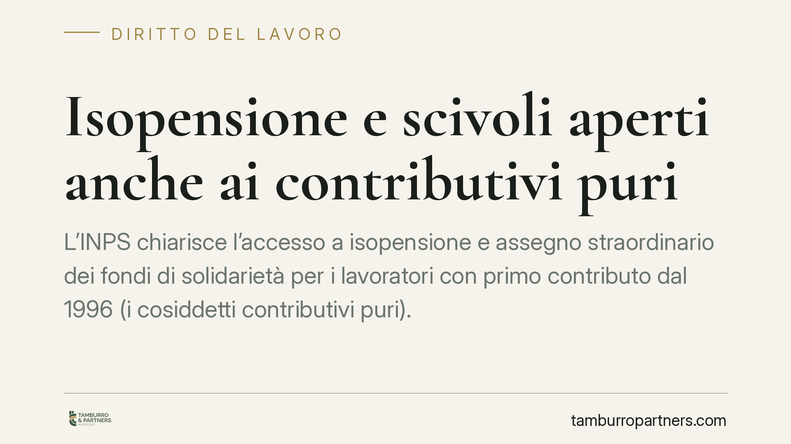

Isopensione e scivoli aperti anche ai contributivi puri
L'INPS chiarisce l'accesso a isopensione e assegno straordinario dei fondi di solidarietà per i lavoratori con primo contributo dal 1996 (i cosiddetti contributivi puri). Il nodo era la soglia minima di importo pensionistico: l'orientamento la verifica al momento dell'uscita, non a quello del pensionamento. Il tema interessa aziende in ristrutturazione, sindacati e lavoratori vicini alla pensione.

Il contesto
Gli strumenti di accompagnamento all'esodo — l'isopensione dell'art. 4 della legge n. 92/2012 e l'assegno straordinario erogato dai fondi di solidarietà — nascono per gestire in modo negoziato le uscite dei lavoratori più prossimi al pensionamento. Sono prestazioni-ponte: accompagnano il lavoratore fino alla maturazione dei requisiti pensionistici, ma non sono, esse stesse, una pensione.
Per i lavoratori interamente inseriti nel sistema contributivo (primo versamento dal 1° gennaio 1996) l'accesso è stato a lungo incerto. Il motivo tecnico riguarda la soglia minima di importo: nel sistema contributivo la pensione di vecchiaia richiede che l'assegno maturato non sia inferiore a una soglia parametrata all'assegno sociale. Se il requisito veniva verificato al momento del futuro pensionamento, molti esodi restavano bloccati.
> Nota sulla fonte. Le indicazioni operative dell'INPS su questo punto vanno lette negli estremi puntuali del documento di prassi applicabile. Prima di procedere raccomandiamo di verificare presso l'Istituto la circolare vigente e il paragrafo di riferimento, poiché il regime può essere aggiornato.
Inquadramento normativo
Due i binari.
Isopensione — art. 4 della legge n. 92/2012. La norma consente, previo accordo sindacale, l'accompagnamento del lavoratore alla pensione con oneri a carico del datore di lavoro. La durata massima dello scivolo, originariamente fissata in 4 anni, è stata estesa fino a 7 anni dalla legge n. 205/2017 (legge di bilancio 2018), con proroghe successive del regime ampliato. Verificare sempre l'orizzonte temporale vigente al momento dell'accordo, perché la finestra dei 7 anni è soggetta a rinnovi normativi periodici.
Assegno straordinario dei fondi di solidarietà — artt. 26 e seguenti del d.lgs. n. 148/2015. È la prestazione erogata dai fondi di settore (credito, assicurazioni, poste, ecc.) ai lavoratori che cessano il rapporto in prossimità della pensione, nell'ambito di processi di riorganizzazione concordati.
Il punto tecnico dirimente per i contributivi puri è il momento in cui si valuta la soglia minima di importo: se al momento dell'uscita anziché a quello del pensionamento. Verificare al momento dell'uscita amplia la platea, perché fotografa la posizione attuale del lavoratore senza pretendere la proiezione dell'importo finale.
Cosa cambia per i contributivi puri
Sul piano pratico, l'apertura dell'accesso significa che un lavoratore con carriera interamente contributiva può oggi rientrare in un piano di esodo che prima gli sarebbe stato precluso. Per l'azienda si allarga il perimetro dei potenziali aderenti; per il lavoratore si apre una possibilità di uscita anticipata coperta dalla prestazione-ponte.
Resta ferma la distinzione di fondo: l'isopensione e l'assegno straordinario non sono pensioni. Sono ponti economici verso il pensionamento. Al termine dello scivolo, il lavoratore accede alla pensione vera e propria solo se e quando maturano i requisiti ordinari.
Attenzione a un punto
Nessun automatismo. L'accesso a questi strumenti presuppone tre condizioni non eludibili:
- Onere economico a carico del datore (per l'isopensione) o del fondo (per l'assegno straordinario): non è una prestazione pubblica gratuita.
- Requisito dimensionale e settoriale: l'isopensione richiede una soglia dimensionale dell'impresa; i fondi di solidarietà operano solo nei settori coperti.
- Accordo sindacale: l'attivazione passa da un'intesa collettiva. Senza accordo, non c'è scivolo.
Di conseguenza, la possibilità teorica di accesso non equivale a un diritto individuale azionabile: dipende dalla scelta datoriale e dalla contrattazione.
Cosa fare in concreto
- Ricostruire la posizione contributiva: chiedere l'estratto conto INPS e verificare la data del primo versamento (spartiacque del 1996) e i requisiti pensionistici attesi.
- Verificare gli estremi della prassi INPS vigente prima di qualsiasi adesione, controllando il paragrafo che disciplina il momento di verifica della soglia.
- Confermare il perimetro aziendale: accertare il requisito dimensionale (isopensione) o l'appartenenza a un fondo di solidarietà di settore.
- Leggere l'accordo sindacale nelle sue clausole economiche e nella durata dello scivolo, verificando la finestra temporale applicabile (fino a 7 anni, salvo aggiornamenti).
- Simulare l'importo del ponte e della pensione finale con un consulente, distinguendo la prestazione-ponte dalla pensione che maturerà al termine.
Un'ultima raccomandazione. Prima di aderire a un piano di esodo, valutate l'impatto sull'assegno pensionistico definitivo: uscire prima incide sul montante contributivo e, quindi, sull'importo finale.
Ogni storia di lavoro ha i suoi tempi.
Se gestisci HR e vuoi un confronto su contenzioso, ispezioni o licenziamenti, scrivi allo studio. Ti rispondiamo entro un giorno lavorativo.